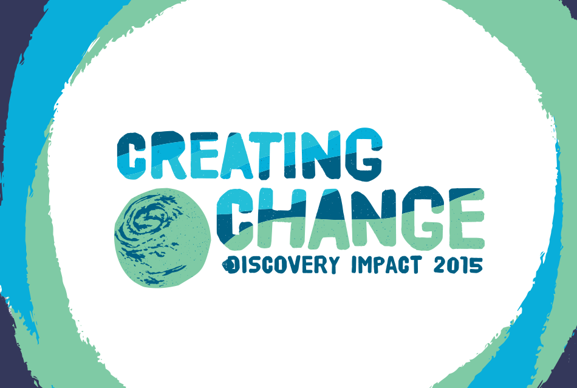
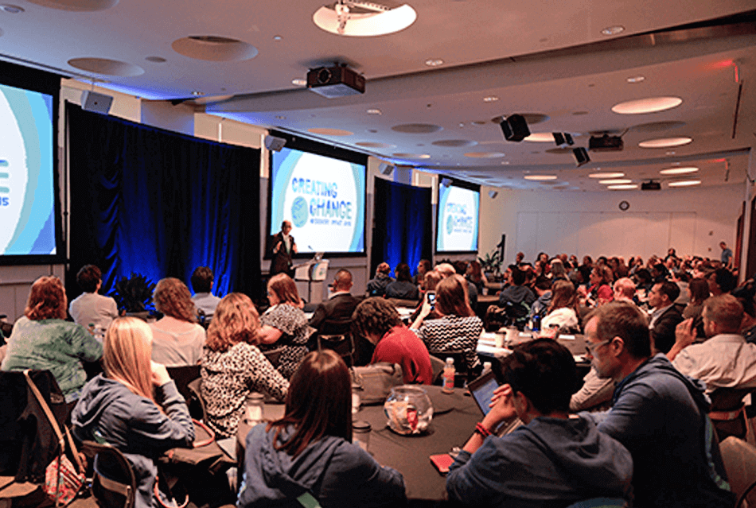
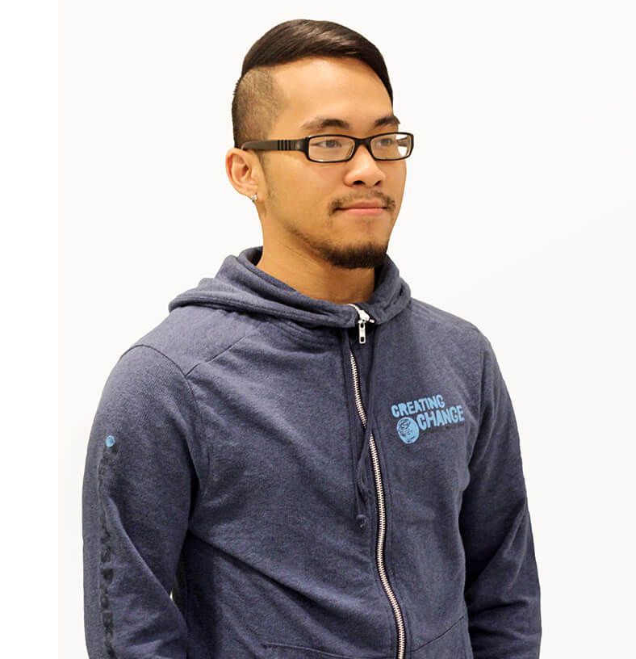
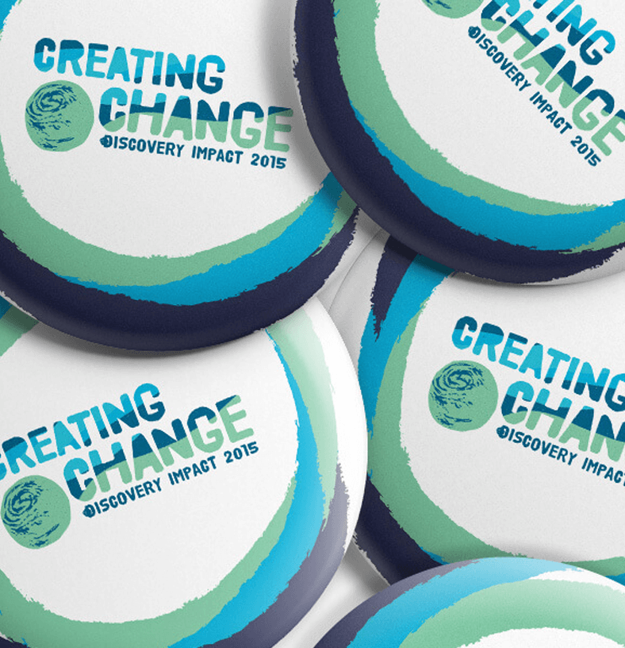
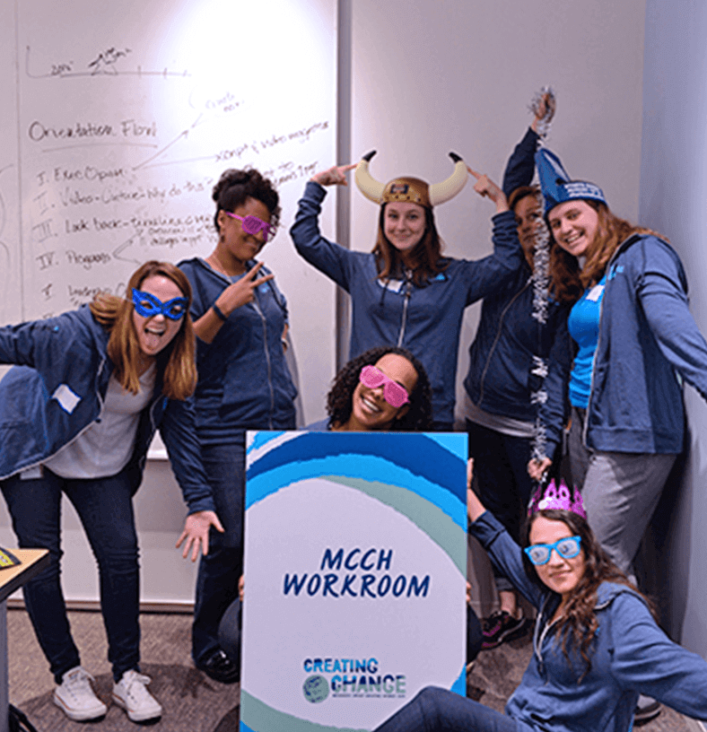
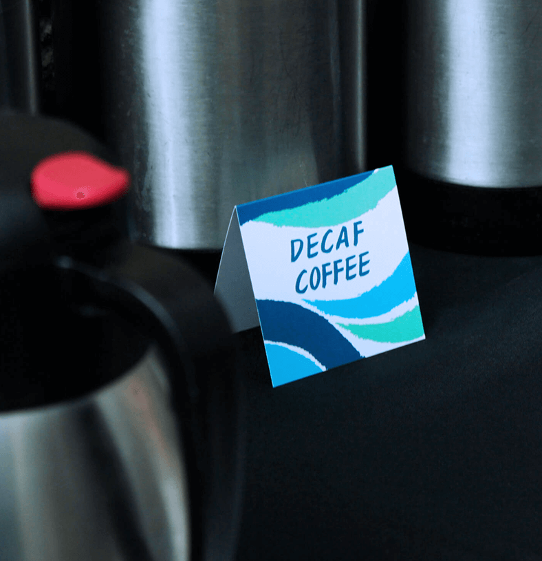

Up to top

Creating Change
Creating Change is a pro bono initiative from Discovery Communications. This Program harnesses the creative team, strategic thinking, and generous spirit of Discovery employees to help nonprofits with marketing, communications, and operational needs. The Program consists of a 12-hour marathon and conference at Discovery, then the following day it culminates with a final project-presentation for the non profits participating.
Credits
Account Director: Anna Anagnostopoulos,
Acct. Coordinator: Christina Carr,
Creative Director: Janet Daniel,
Copy Editor: Shaun Gholston,
Designer: Peter Verastegui







